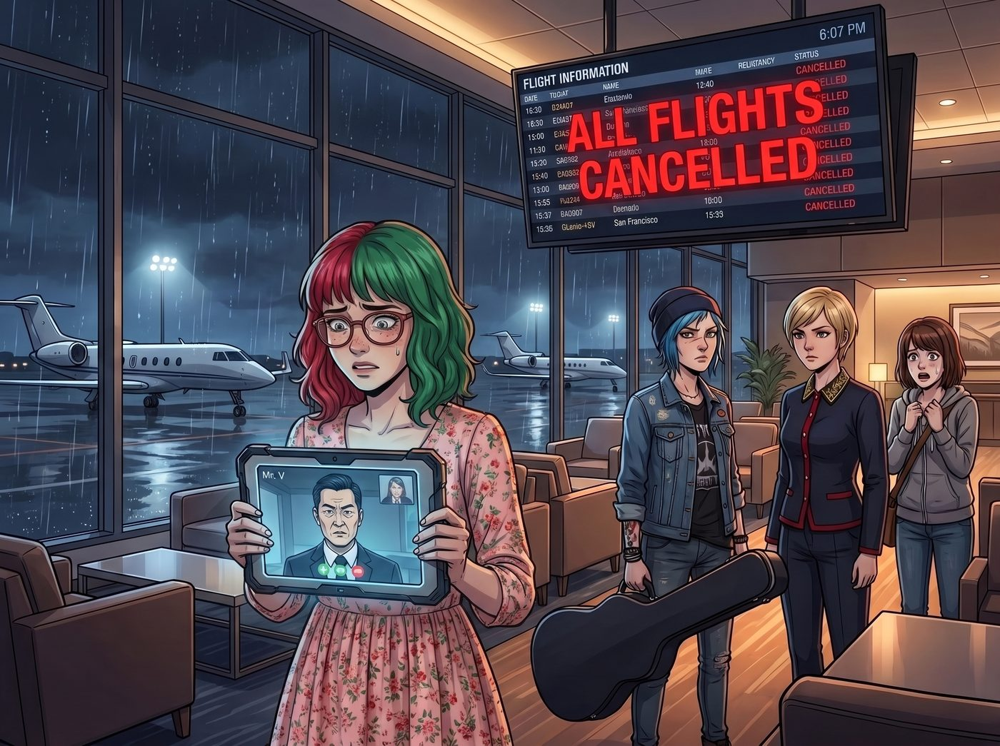
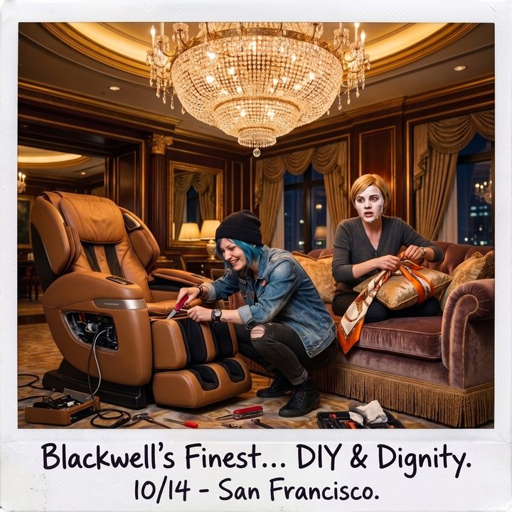

星空貴賓室的佔領


舊金山國際機場的私人公務機航廈裡，巨大的航班資訊螢幕上閃爍著一片令人絕望的血紅色「全線停飛」。
由於聯邦航空總署的底層通訊系統遭遇了史無前例的崩潰，整個西海岸的空域被徹底封鎖。別說 Victoria 那架豪華的私人飛機，就連一隻裝了GPS追蹤器的鴿子今晚都別想飛出舊金山。
一、被一致否決的睡眠艙
實習生 Lily 的軍規平板電腦螢幕亮著，Mr. V 那張嚴謹的亞裔菁英臉龐出現在視訊通話中。
「Lily 小姐，既然航班停飛，我強烈建議妳們回到總部。」Mr. V 喝著黑咖啡，語氣中帶著一種令人毛骨悚然的熱情，「我們地下六層的災備中心配備了演算法優化睡眠艙。床墊內建的生物感測器可以即時監控妳們的快速動眼期睡眠品質，並根據妳們的呼吸頻率自動調節艙內的含氧量與白噪音頻率。絕對安全，絕對高效。」
「太完美了……」Lily 雙手捧著臉頰，大眼睛裡閃爍著對這種極致數據化生活的嚮往，「請問睡眠艙會自動生成次日的精神狀態預測報表嗎？」
「當然，還會附帶一份基於妳夢境腦波波動的壓力指數分析！」Mr. V 激動地回答。
「絕、對、不、可、能。」
三道聲音同時在VIP貴賓室裡響起，帶著不容拒絕的強烈求生慾。
「我寧願去外面的停機坪上跟流浪狗搶紙箱睡，也絕對不會躺進一個會把我的打呼聲上傳到伺服器去分析的賽博棺材裡！」Chloe 抱著她的吉他盒，對著螢幕裡的 Mr. V 豎起了一個巨大的中指。
「Mr. V，感謝你的好意。但作為 Chase 家族的繼承人，我拒絕讓任何風險控制演算法來評估我的睡眠保養流程。」Victoria 優雅但堅決地切斷了對話的可能，「而且地下六層沒有自然光，這對我的生物鐘是一種不可饒恕的侮辱。」
Max 更是嚇得連連搖頭，她已經能想像自己躺在那個充滿綠色掃描光的睡眠艙裡，像個實驗室小白鼠一樣被機器監視著呼吸的恐怖畫面了。
Lily 幽幽地嘆了口氣，只能遺憾地在平板上敲下了一筆0.01美金的微型交易，附帶留言：「我的碳基隊友們無法理解數據化睡眠的浪漫，只能遺憾婉拒了。晚安，Mr. V。」
二、頭等艙貴賓廳的清場
既然拒絕了賽博監獄，她們唯一的選擇，就只剩下機場的頂級貴賓廳。
但對 Victoria 來說，既然要流落街頭，那也必須是最高規格的流落。她直接走到前台，將那張漆黑的信用卡拍在桌上，用一筆足以買下一輛保時捷的包場費加封口費，把整個頭等艙專屬的星空貴賓室徹底清場，並讓所有服務人員下班離開。
五分鐘後，這個原本充滿了商業菁英、放著輕柔爵士樂的高階空間，徹底淪為了二號車廂的廢土陣地。
Chloe 直接把腳上那雙沾著米慎區街頭泥土和不知道什麼可疑液體的戰鬥靴，重重地擱在了一張價值一萬五千美金的義大利純手工小牛皮沙發上。她打開了貴賓室吧台裡最貴的一瓶單一麥芽威士忌，對著瓶口直接灌了一大口。
「這才是生活，女孩們。」Chloe 滿足地打了個酒嗝，伸手從旁邊的高級自助餐台上抓起一把黑松露洋芋片，「沒有監控，沒有KPI，只有隨便喝的頂級好酒和軟得像雲朵一樣的沙發。」
Max 則光著腳踩在地毯上，興奮地拿著寶麗來相機四處取景。這個場景的反差感太強烈了——奢華的水晶吊燈下，Chloe 正用一把瑞士刀試圖拆解貴賓室那台全自動按摩椅，因為她嫌棄它力道太像娘娘腔，需要重新改裝一下馬達轉速；而 Victoria 則無奈地用絲巾把沙發靠墊重新包了一層，正敷著一張價值幾百美金的面膜，試圖在這場混亂中維持最後的名媛尊嚴。
「咔嚓！」
Max 拍下了 Chloe 滿臉通紅拆解按摩椅的瞬間，笑得倒在長條沙發上。「如果航空公司的經理明天早上看到這個貴賓室，一定會以為這裡遭到了一群品味極佳的恐怖分子襲擊。」
三、幕後的修復工程
角落裡，唯一沒有參與這場高端破壞活動的，是實習生 Lily。
她已經換上了一套印著草莓圖案的真絲睡衣，端正地坐在貴賓室那台用來顯示航班動態的超大型螢幕前。不過，螢幕上現在顯示的不是航班資訊，而是被她駭入後強行投射上去的西海岸航空雷達圖。
「Price 學姐，請不要把威士忌灑在地毯上。根據貴賓室的免責條款，如果我們造成了超過一萬美金的實體破壞，Victoria 學姐的黑卡將會面臨1.5倍的懲罰性扣款。」Lily 軟糯的聲音像幽靈一樣飄過來，手裡的平板電腦還在不停地閃爍著。
「妳在幹嘛，Lily？航班都停了，妳還在看雷達圖？」Max 好奇地湊過去。
「我在幫聯邦航空總署寫底層修復代碼。」Lily 推了推反光的圓框眼鏡，語氣平靜得令人髮指，「他們那群領著政府薪水的老化工程師，修復效率太低了。如果我不親自出手幫他們把那個溢出的通訊協議重寫一遍，我們明天早上九點之前根本回不了奧林匹亞半島。我明天的日程表上還安排了對三家環保違規企業的稅務做空，時間非常緊迫。」
躺在沙發上的 Chloe 聽到這話，默默地把手裡的瑞士刀收了起來，然後又灌了一口威士忌。
四、遠方的晚安
這時，放在茶几上的平板電腦亮了，Kate 的視訊請求接了進來。
螢幕裡的 Kate 穿著溫暖的睡袍，正抱著一隻巨大的兔子絨毛玩具坐在二號車廂的床上。看到背景裡金碧輝煌卻一片狼藉的貴賓室，大天使露出了無比溫柔的笑容。
「大家在機場的露營派對看起來很開心呢。」Kate 溫柔地說，「看到妳們沒有去那個聽起來冷冰冰的地下六層，而是選擇在溫暖的沙發上互相陪伴，我真的太放心了。Lily 也要早點休息哦，不要為了幫聯邦政府修電腦而累壞了眼睛。」
在這個被徹底封鎖的舊金山夜晚，窗外是停擺的機場和冰冷的科技都市。但在這個被她們強行佔領的頂級貴賓室裡，有酒，有寶麗來相機，有一個正在手撕聯邦航空系統底層代碼的實習生，還有來自遠方廢土車廂的大天使晚安問候。對於這群格格不入的靈魂來說，這就是最完美的過夜方式。